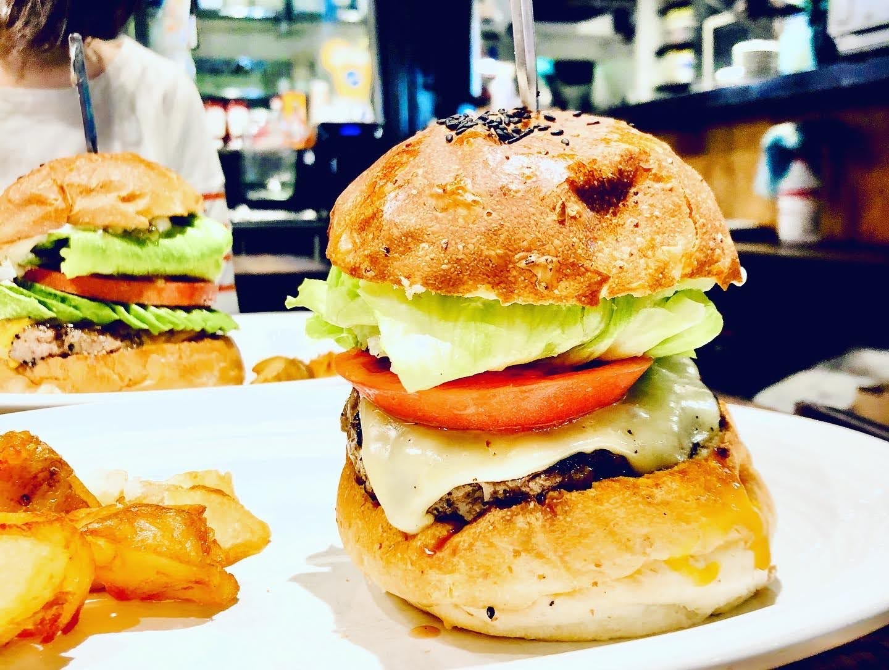

The Amazing Hamburger
hotcoffeeheroThis is a photo of the most delicious hamburger I have ever eaten in my entire life ever, ever. The place is called Munch's Hamburger, about a twenty walk from Hamamatsucho Station. When His Majesty the Don came to Japan, Shinzo Abe took him to this burger joint. What a remarkable day to have sat in the same establishment as the the Lion of Queens. Anyway, ignore the photo and the text. The purpose of this project is the NAV BAR. Click on the icon in the top left and prepare to have your hair blown back.
burger
This is hipster Ipsum: I'm baby authentic pinterest neutra flexitarian schlitz semiotics. Health goth XOXO YOLO beard. Raclette copper mug authentic godard coloring book pok pok. Air plant artisan chia hella organic four loko direct trade venmo occupy portland next level succulents coloring book poke. Tacos lomo synth helvetica, small batch shoreditch glossier paleo quinoa try-hard adaptogen live-edge man braid. Hammock truffaut bitters pour-over glossier.